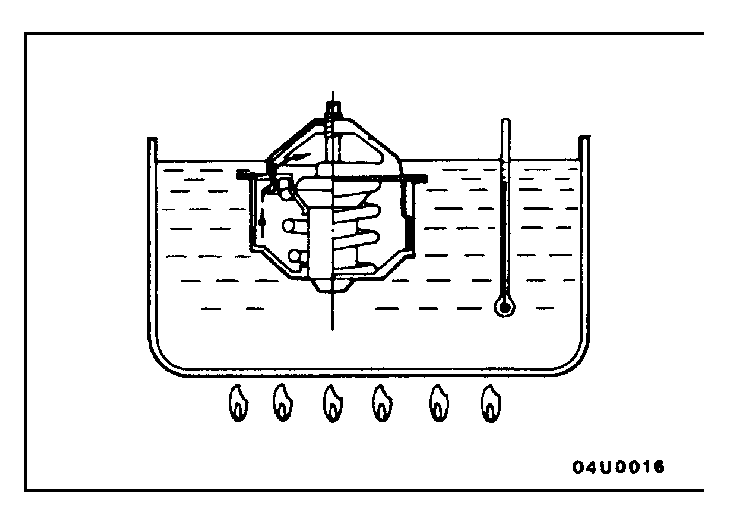
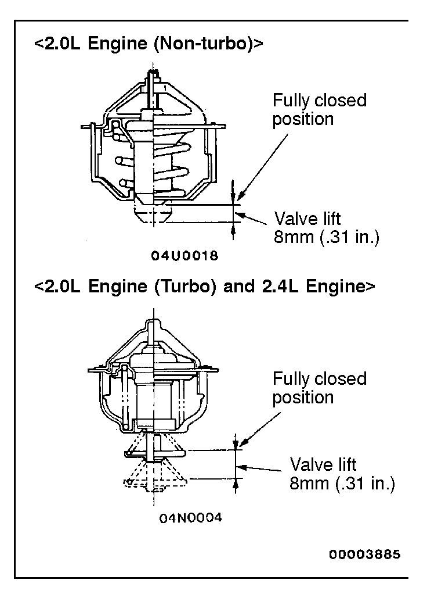

![[Previous]](https://mitsubishitechinfo.com/data/F24S/BUTTONS/fprevg.png)
![[Next]](https://mitsubishitechinfo.com/data/F24S/BUTTONS/fnextg.png)
 
INSPECTION
THERMOSTAT CHECK
•Check that the valve closes tightly at room temperature.
•Check for defects or damage.
•Check for rust or other contamination on the valve, and remove if necessary.
•Immerse thermostat in container of hot water. Stir to raise water temperature and check that the thermostat valve opening temperature and the water temperature with valve fully open [valve lift: 8 mm (.31 in.)] are at the standard value.
Standard value:
Valve opening temperature:
<2.0L Engine (Non-turbo)> 90.5°C (195°F)
<2.0L Engine (Turbo) and 2.4L Engine> 82°C (180°F)
Full-opening temperature:
<2.0L Engine (Non-turbo)> 102°C (216°F)
<2.0L Engine (Turbo) and 2.4L Engine> 95°C (203°F)
NOTE
Measure valve height when fully closed. Calculate lift by measuring the height when fully open.
Replace the thermostat if it does not open properly, or does not have the correct valve lift.